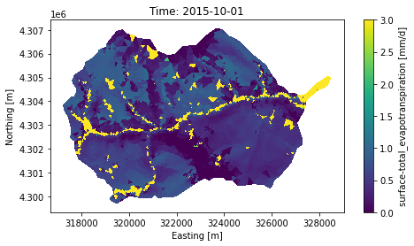

Plot surface variables#
# skip this if package has already been installed
!pip install modvis
import modvis.ats_xdmf as xdmf
import modvis.plot_vis_file as pv
model_dir = "../data/coalcreek"
Download the sample data when running on Google Colab
import os
if not os.path.exists(model_dir):
!git clone https://github.com/pinshuai/modvis.git
%cd ./modvis/examples/notebooks
import vis data#
visfile = xdmf.VisFile(model_dir, domain='surface', load_mesh=True)
plot surface ponded depth#
fig, ax, tpc = pv.plot_surface_data(visfile, var_name="surface-ponded_depth",
log = True, vmin=0.01, vmax=4,
time_slice=0)
2022-05-18 16:06:57,549 - root - INFO: No unit convertion.
plot ET#
fig, ax, tpc = pv.plot_surface_data(visfile, var_name="surface-total_evapotranspiration",
log = False, vmin=0, vmax=3,
time_slice= "2015-10-01")

plot snow cover#
fig, ax, tpc = pv.plot_surface_data(visfile, var_name="surface-area_fractions.cell.1",
vmin=0, vmax=1, time_slice=0)
2022-05-18 16:06:58,433 - root - INFO: No unit convertion.